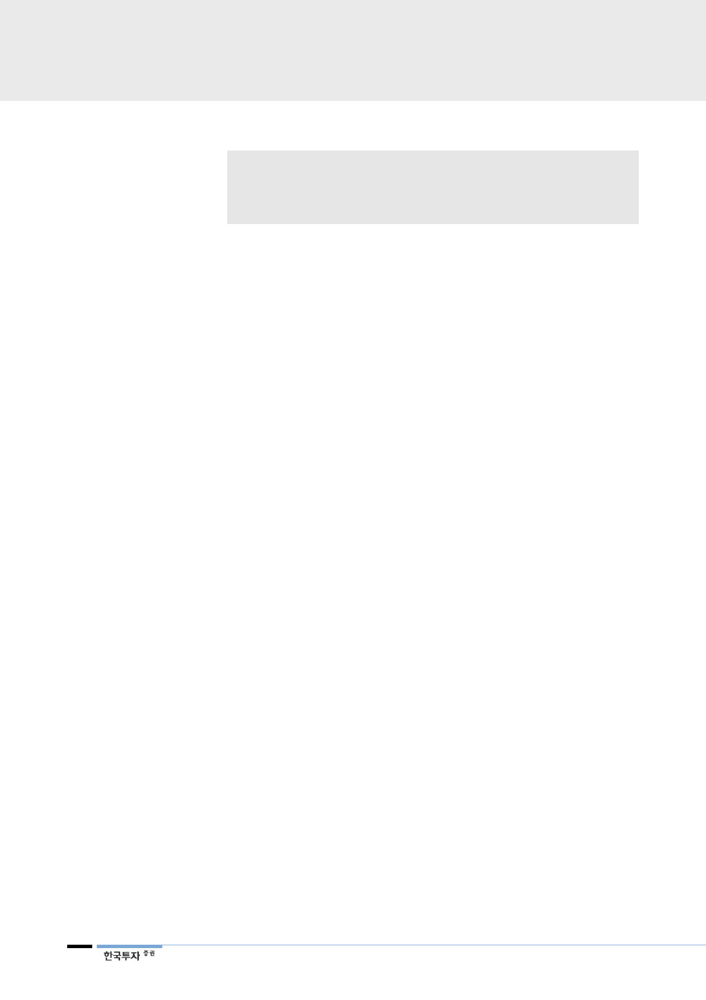

삼성전자(005930)
리포트 작성 목적
• 과거 액면분할 사례 분석을 통한 삼성전자 주가 방향성 점검
• 1, 2분기 사업부문별 실적전망과 밸류에이션 검토
• 하반기 반도체업황 둔화 가정 하에서 삼성전자의 상대적 매력도 제시
I. 과거 사례들을 통해 본 액면분할의 영향
1. 역대 사례: 2000년 SKT, 2010년 제일기획, 2015년 아모레퍼시픽
지난 23일 삼성전자 주주총회에서 50대 1 액면분할 안건이 통과됐다. 이에 따라
삼성전자는 4월 30일부터 3거래일 동안 거래정지에 돌입한 후, 5월 4일 거래가
재개된다. 당초 매매거래정지 기간은 4월 25일부터 5월 16일까지였으나, 삼성전
자의 시장 내 규모 등이 고려되어 단축됐다. 만도, 휠라코리아 등 올해 중으로 액
면분할이 예고된 기업들이 9개에 달하는 만큼 거래소와 예탁원 측에서는 언론을
통해 거래정지 기간을 단축하고 중장기적으로는 거래정지 없이 분할이 가능하게
하는 방안을 마련하겠다고 밝혔다.
당연한 이야기지만, 분할을 통해 유통주식 수가 증가하면 유동성 증가로 이어지
고, 유동성 증가는 대체적으로 시장에 긍정적이다. 특히 삼성전자의 경우 코스피
내에서 차지하는 시가총액 비중은 25%에 달하지만(우선주 포함) 그에 비해 코
스피 내 일평균거래량 비중은 0.1% 수준이다. 시가총액 2위인 SK하이닉스의 일
평균거래량 비중이 약 2%(최근 1년 평균은 6%로 급증했다)라는 점을 감안하면
유동성이 확연히 낮다. 이번 분할로 삼성전자의 일평균거래량은 코스피 전체의
4.2% 수준으로 증가할 전망이다. 코스피 전체 일평균거래량은 분할 전보다 평균
5% 이상 증가할 것으로 보인다.
액면분할 자체가 펀더멘털 변화에는 영향을 미치지 않는다는 점에서 이벤트 자체
가 주가에 미치는 영향은 제한적이다. 하지만 여러 사례에서 단기적으로 벤치마
크를 상회하는 수익률이 관찰됐다. 2000년 SK텔레콤, 2010년 제일기획, 2015년
아모레퍼시픽 사례가 이에 모두 해당된다. 세 주식 모두 1개월 후에는 벤치마크
를 평균 14% 상회했고, 아모레퍼시픽의 경우 1년 후에도 벤치마크를 상회하는
모습이 관찰됐다.
다만 삼성전자의 거래정지 기간 동안 ETF 등 패시브 펀드에 일시적인 영향을 미
칠 가능성은 높다고 판단된다. 2015년 아모레퍼시픽 분할 당시 TIGER 생활소비
재 ETF에서 NAV순자산가치와 주가 간 괴리의 일시적 확대가 관찰됐기 때문이
다. 분할 직전 해당 ETF 내 대장주는 아모레퍼시픽으로 비중은 약 24%였다. 거
래정지 기간이었던 2015년 4월 22일부터 5월 7일까지 순자산가치와 주가 간
괴리는 ETF 상장 이후 평균보다 약 43% 상승했다. 대장주의 거래중지 기간 동
안 종가가 실제 NAV에 비해 낮게 가격이 매겨진 것이다. 다만 거래중지 기간이
아모레퍼시픽에 비해서 현저히 짧아 이러한 영향은 비교적 제한적일 것이다.
2